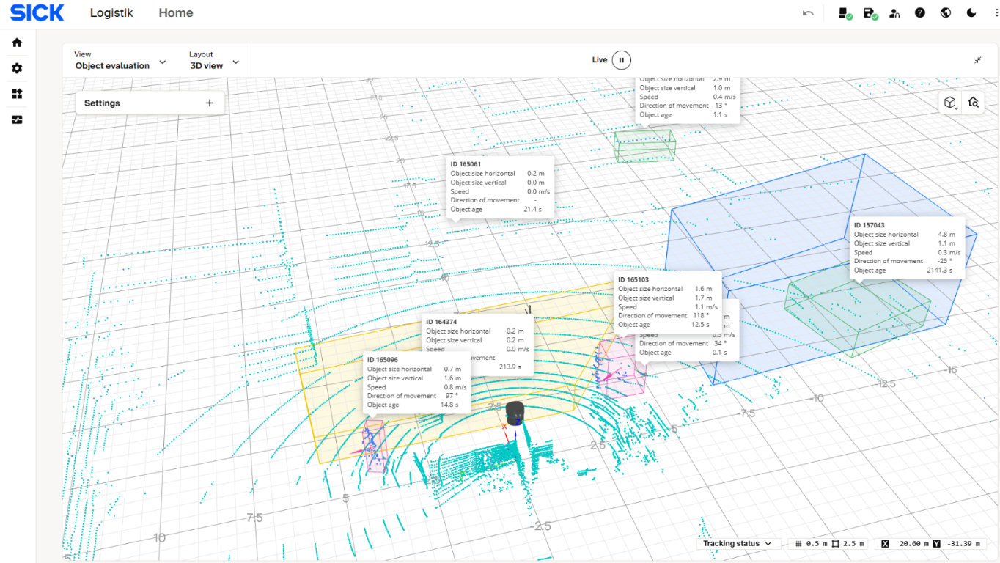
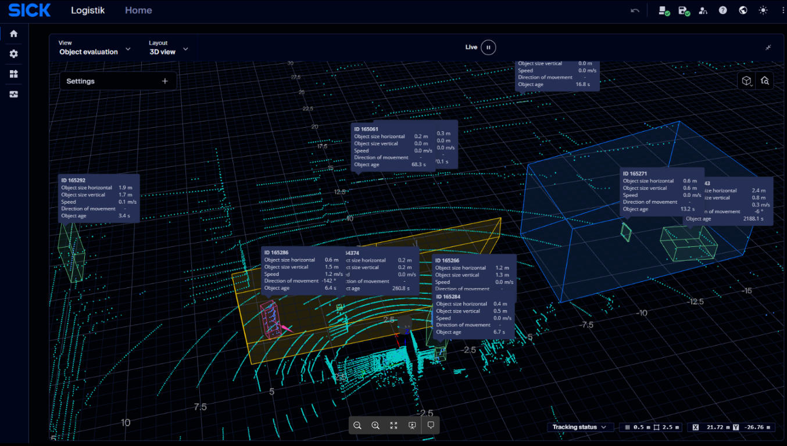

Release Notes¶
This page summarizes firmware changes for the multiScan100 product family from firmware version 2.x.x. Check the release and device variant before updating or using a feature.
General Information¶
- Firmware 2.x.x is the standard firmware for all multiScan100 variants.
- multiScan100-S has a separate firmware file, which must be requested.
- A firmware update typically does not affect active parameter settings.
- Purchased licenses are not affected by firmware upgrades.
- Reboot the device after activating or deactivating licenses.
Update Instructions¶
multiScan100 firmware can be updated through SOPAS ET, Sentio Creator, or the
web UI (SOPASair) with an .spk software package. For the steps, see
Firmware Update.
Update via SOPASair.
Firmware updates through SOPASair in a web browser are supported from version
2.4.1. Use the signed .spk.signed package. Start the update from the device
menu or from the link on the displayed firmware version.
Firmware 2.5.0¶
Release date: 22 October 2026
Effective from: SN2644xxxx
3D Object Evaluation / 3D Object Tracking.
- New 3D Object Evaluation functionality using tracked object characteristics.
- Filtering by stationary or moving objects, object size, speed, direction of movement, and age.
- A detailed description is available in the online help in SOPASair.
- Available within the 3D Object Detection Advanced Package.

Firmware 2.5.0: tracked objects and their characteristics in the SOPASair 3D Object Evaluation view.
Optimization of Motor Parameters.
- Improved motor control for increased robustness and stability.
- Improved measurement data availability under challenging operating conditions.
GUI.
- New Dark Mode.
- Updated GUI for 3D Object Evaluation.
- Updated error and notification messages.
- General usability improvements.

Firmware 2.5.0: SOPASair Dark Mode with the 3D Object Evaluation view.
Firmware 2.4.4¶
Release date: 5 May 2026. Firmware 2.4.3 was not released.
New features.
- Firmware 2.4.4 is available for multiScan165S. The previous firmware for that variant is 2.3.0.
- Ground Filter and Perpendicular Distance are available as non-safety-related add-ons for multiScan165S with Safe 3D Object Detection (part number 1151596). See the current multiScan165S operating instructions for details.
Optimization.
The FPGA version was updated for production optimization. Firmware 2.4.4 is functionally identical to 2.4.2.
Known issues.
Contamination-indication sectors may not be saved permanently and can be lost after a reboot.
As a workaround, import an appropriate sensor configuration after reboot and
verify the sector setup. Use the REST /ContaminationConfig endpoint or the
CoLa A/B sWN ContaminationConfig telegram for parameterization.
Firmware 2.4.2¶
Release date: 20 October 2025
New features.
Firmware 2.4.2 adds support for multiScan166. Earlier firmware versions do not support multiScan166.
Firmware 2.4.1¶
Release date: 20 October 2025
New features.
Ground Filter.
The Ground Filter provides upper and lower ground-threshold values. In applications with moving objects, it can reduce false field-evaluation triggers caused by the ground. When configured correctly, it is intended to retain detection of small objects such as forklift tines. The filter can be used indoors and outdoors. It affects both field evaluation and Perpendicular Distance.
Perpendicular Distance.
For an object inside a configured box-shaped field, Perpendicular Distance
can output the object's minimum and maximum distance to an axis (X, Y, or Z).
Use sRN perpendicularDistanceResult for a one-time request and
sEN perpendicularDistanceResult for event-based output.
Firmware update via web GUI.
Firmware can be updated through the web GUI without SOPAS ET, using the
signed .spk.signed package.
Parameter import and export.
The firmware adds parameter import and export through the web GUI.
GUI optimization and feature enhancements.
- The multiScan-S is now shown with a yellow ring in the GUI. Previously, it was not visually distinguishable from other variants.
- Field contours uploaded by telegram are transferred directly to the web UI.
- The Cybersecurity overview shows that the Maintenance and Authorized Client user levels are disabled by default. They can be enabled in the GUI after logging in at the Service user level.
- HTTPS is supported for multiScan100 GUI components.
- Full-screen mode can be selected by adding
?fullscreen_mode=to the scan view URL. - The web update file dialog allows only signed
.spkfiles. - The scan-layer filter has a redesigned interface that makes enabled and disabled layers easier to identify. Each layer can be deactivated individually with a click.
- The distance filter displays minimum- and maximum-distance spheres to show the selected area.
- An Undo button was added next to Save.
- The Fullscreen button was moved from the top line next to split view to the device menu.
- The DHCP fallback mode was changed to Static IP.
- The
GetFieldEvaluationContourtelegram was implemented.
Temperature improvements.
The temperature range was extended from +50 °C to +60 °C when the device is mounted with standard bracket 2130373. The device does not shut off when its temperature exceeds the configured limits.
Firmware 2.4.1: usage condition and mission time.
| Usage condition | Mission time |
|---|---|
| Continuous use at 25 °C | 42 years |
| Continuous use rarely above 30 °C | 37.5 years |
| 55% of the time up to 30 °C, 35% up to 40 °C, and 10% up to 50 °C | 20 years |
| 70% of the time up to 30 °C and 30% up to 50 °C | 18 years |
| 80% of the time up to 30 °C and 20% up to 60 °C | 13.4 years |
| Continuous use at 50 °C | 8 years |
When a configured temperature range is exceeded, an output can be switched. Use these telegrams for temperature warnings:
- Read current device temperature alarm status:
sRN temperatureAlarmStatus - Set device temperature alarm configuration:
sWN temperatureAlarmConfiguration - Read device temperature alarm configuration:
sRN temperatureAlarmConfiguration
Bug fixes.
- Harmonized sensor behavior with other LiDAR sensors.
- Fixed diagnostic dumps not downloading through the GUI.
- Fixed measurement data sometimes not appearing in the UI after a browser refresh.
- Fixed an error when creating fields with X/Y extents greater than 100 m.
- Fixed missing layer selection in the Object Detection scheme.
- Fixed the queue-overflow error not resetting when streaming was stopped while the error was active.
Firmware 2.3.0¶
Release date: 2 December 2024
New features.
- High-resolution layers in 3D Object Detection: Choose among 14 one-degree scan layers or either of two high-resolution layers (2D scan layers 6 or 14). A field can be configured multiple times with different sources. multiScan165 does not have high-resolution layers.
- Detection History: The 3D Object Detection software adds a page for reviewing field-infringement history and logs of current field status.
- REST firmware update: Firmware updates can be performed using REST.
- Online Help: Existing help was updated with new content and guidance.
- I/O application: Adds a warning when I/O ports cannot be created and
removes
FieldEvaluationAppStatefrom the source list. - CoLa1 password handling: ROM passwords were removed; only RAM passwords are permitted.
- Third-party components: Updated to newer versions.
- GUI changes: Input configuration is visible when Port 1 is set to Input; the start page can show field evaluation or measurement data; the Field Evaluation Scan GUI can receive scan layers (for multiScan136, both one-degree and high-resolution layers); and the I/O status display was redesigned.
Bug fixes and improvements.
- IMU errors, including missing data delivery, now generate an error notification.
- Fixed mounting position not being written when set in the SOPAS ET device window.
- More than 20 sources can now be connected to a single output. Previously, exceeding 20 sources produced an error.
- PTP is no longer shown in the selection list when no PTP license is available.
- Switching between streaming and field-evaluation views is disabled when either required license is missing.
- System Diagnosis displays the sensor's local time when configured, instead of UTC.
- Corrected the translation of “No echo” to “Ignore missing echo.”
- Duplicated evaluations now appear immediately in the GUI without reloading the browser. Previously, duplicated fields were not displayed and could not be deleted.
- Fixed the maximum-range circle being tilted; it is positioned in the scanner's zero-degree layer.
- Fixed the preset mounting position not being displayed correctly.
- The frame count displayed for field-evaluation response time now reflects the scanning frequency correctly. Previously, a 50 ms response time could incorrectly be shown as three frames.
- Online Help no longer overlaps the settings area.
- Opening Object Detection and rapidly clicking + no longer produces
Access Denied (/api/EvaluationGroupMapping). - White points are visible in Echo View.
- Fixed CoLa 2 reading and writing of Port Configuration and Source List.
- Fixed deserialization of Compact azimuth angles above pi.
- Cleaned up different API interfaces.
Known issues.
Hardware.
At startup, the motor may not begin rotating immediately and a Motor Stalled error may appear in the error log. The sensorless motor driver cannot measure the current frequency at startup. It retries its start sequence, which may take up to six seconds; after ten seconds, software resets the driver module.
Firmware.
DoDiagnosisincreases system load and can adversely affect measurement operation, potentially causing additional errors.- While the GUI creates a diagnostic file, the device LED can remain green and the status can show READY even though 3D Object Detection and field evaluation are blocked. Normal operation resumes when file generation is complete.
- Ports configured as inputs with a 5-pin system plug do not work with Active Low.
Application and UI.
- In the Upper Z limit field, the cursor can jump vertically when the field is empty; this does not occur when it contains text.
- Device-name assignment can produce an error.
- A soft reset triggered through the UI can cause web-server error messages.
- Creating fields with an X/Y extent greater than 100 m can cause an error and prevent field evaluation from working.
- The queue-overflow error is not reset when streaming stops while the error is active.
- Layer selection is missing in the Object Detection scheme.
- Duplicating evaluations can fail after a group and evaluation are created, one evaluation is duplicated, and the original is deleted. Adding a new evaluation with ID 1 allows duplication again.
Firmware 2.2.2¶
Compatible with: multiScan100; Release date: 19 August 2024
New features.
Licensed 3D Object Detection for multiScan165.
The licensed SensorApp was already available for multiScan136. For multiScan165, it supports collision avoidance and area monitoring, with up to 48 configurable fields. The evaluation uses real elevation angles based on each sensor's production calibration data. It improves evaluation of object position and size for multiScan136 and multiScan165, using all 16 layers for multiScan165.
More simultaneously active fields require more processing and increase system load. Excessive load can cause performance problems or system errors. Deactivating other features, such as the GUI, measurement-data output, and filters, can reduce load and allow more fields to be active.
- Additional GUI languages were added.
- An internal recorder can record and play back data on the device; a separate recorder tool is required.
sRN FieldEvaluationGroupStatereads evaluation-group state:0= not configured,1= active,2= inactive.- Online Help was updated.
- Scan-GUI visualization was optimized, including use of scanner-specific elevation angles.
- The GUI now warns when an object is too small compared with the layer distance.
- Support for multiScan165 was added.
Fixes, improvements, and changes.
- Improved port selection in 3D Object Detection; ports already in use are no longer selectable.
- Improved resource monitoring in 3D Object Detection. Warnings indicate potential high load and help identify which functions use resources; creating additional fields no longer produces an error message, only warnings.
- Applied performance optimizations.
- Improved the GUI structure.
- Aligned contamination-indication and warning-LED behavior.
- Improved 3D Object Detection field visualization.
- Fields can now be duplicated more than four consecutive times, and group deletion works correctly.
- Applying the current system time now assigns the required internal variables correctly, preventing an incorrect system-time display.
- Mounting settings are visible without an IMU license.
- Improved contamination-indication timing and error handling.
- Field points deleted in the 3D Object Detection table view are now also removed from the graphical view, so both views show the same values.
- Corrected display of umlauts in the Input/Output window.
- Reduced the internally blocked
169.254.x.xIP address range. - The Reset and maintain communication interface button now performs the reset correctly.
- System timestamps, including IMU, 3D Object Detection, and scan timestamps, are in UTC.
- The interval filter now starts at
2. - Removed the sensitivity setting from Inputs/Outputs (edge/level).
- When more than three echoes are measured, the last echo is used instead of the third.
- An application-state error now changes the device state to error.
- Queue-overflow errors are shown only when data loss occurs.
Known issues.
- More than 100 field points can produce a duplicate error message.
- In Object Detection, quickly clicking + after opening the page can
produce
Access Denied (/api/EvaluationGroupMapping). - Duplicating fields may not work correctly. Press F5 to refresh the browser as a workaround.
- GUI CPU usage can increase over time. If the GUI freezes, close and reopen the browser.
- Connecting more than 20 sources to an output produces an error.
- The change-password dialog may not disappear.
- An incorrect error message is shown if polygon points exceed 100 m.
- The queue-overflow error is not reset when streaming stops while the error is active.
Firmware hash.
The published SHA-256 hash for the firmware file is:
110a4eb514b7ec868ecd97f2fc40ec8418dd5e5f56a7e48a099d649e3a84e2b6
Compare a downloaded file's SHA-256 fingerprint with the value published by SICK to check that the file has not been corrupted or manipulated.
Chrome 128 scan-view issue.
During tests with the Chrome 128 beta, measurement data was not displayed in the 2D and 3D SOPASair visualizations. SOPAS ET was not affected. Microsoft Edge was also affected because it uses the same software base.
Workarounds are to update the sensor to the latest firmware, use Firefox, use SOPAS ET, or use Chrome Portable version 127 or earlier. Firmware 2.2.2 contains a fix for this issue.